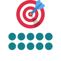
always
دائمًا
She always arrives on time.
تصل دائمًا في الموعد.
How Often
مرّر الماوس على السماعة أو اضغط عليها لتسمع النطق. السماعة الكبيرة نطق أمريكي (وهو المكتوب بالرموز)، وزر UK نطق بريطاني.

دائمًا
She always arrives on time.
تصل دائمًا في الموعد.
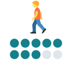
عادةً
I usually walk to work.
أذهب إلى العمل مشيًا عادةً.
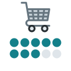
في العادة
The shop normally opens at nine.
يفتح المتجر في العادة الساعة التاسعة.
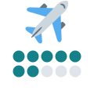
بشكل متكرر
He travels frequently for work.
يسافر كثيرًا بسبب عمله.
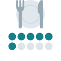
غالبًا / كثيرًا
We often eat out on Fridays.
نأكل خارج البيت كثيرًا أيام الجمعة.
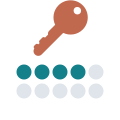
أحيانًا
I sometimes forget my keys.
أنسى مفاتيحي أحيانًا.
بين الحين والآخر
We occasionally go to the cinema.
نذهب إلى السينما بين الحين والآخر.
قلّما
He seldom talks about his family.
قلّما يتحدث عن عائلته.
نادرًا
I rarely watch TV.
نادرًا ما أشاهد التلفاز.
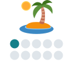
نادرًا جدًا
She hardly ever takes a day off.
نادرًا جدًا ما تأخذ يوم إجازة.
أبدًا
I never drink coffee at night.
لا أشرب القهوة ليلًا أبدًا.
في أي وقت (سؤال)
Have you ever been to London?
هل زرت لندن من قبل؟
يوميًا
The newspaper is published daily.
تصدر الصحيفة يوميًا.
أسبوعيًا
We meet weekly to review progress.
نجتمع أسبوعيًا لمراجعة التقدم.
شهريًا
I pay the bill monthly.
أدفع الفاتورة شهريًا.
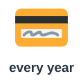
سنويًا
The fee is paid yearly.
تُدفع الرسوم سنويًا.
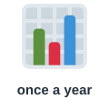
سنويًا (رسمية)
The report is published annually.
يصدر التقرير سنويًا.
مرتين
Take this medicine twice a day.
تناول هذا الدواء مرتين في اليوم.
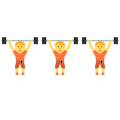
بانتظام
You should exercise regularly.
ينبغي أن تمارس الرياضة بانتظام.
باستمرار
The phone is constantly ringing.
يرن الهاتف باستمرار.
ستسمع كلمة من كلمات الصفحة، فاضغط على الصورة التي تعبر عنها.
الكلمات المميزة هي كلمات هذه الصفحة. اضغط على أي كلمة ليبدأ الصوت منها ويكمل ما بعدها.
Doctor, I always feel tired, and I sometimes get headaches.
يا دكتور، أشعر بالتعب دائمًا، وأحيانًا يصيبني صداع.
How often do you exercise? Do you do it regularly?
كم مرة تمارس الرياضة؟ هل تمارسها بانتظام؟
Not really. I rarely go to the gym, and I hardly ever walk anywhere.
ليس حقًا. نادرًا ما أذهب إلى النادي، ونادرًا جدًا ما أمشي إلى أي مكان.
Have you ever tried swimming?
هل جربت السباحة من قبل؟
Never. I normally sit at my desk all day, and I usually eat there too.
أبدًا. أجلس في العادة على مكتبي طوال اليوم، وآكل هناك أيضًا عادةً.
Do you often drink coffee?
هل تشرب القهوة كثيرًا؟
Yes, and frequently at night. My phone is constantly ringing, so I need it.
نعم، وكثيرًا ما أشربها ليلًا. هاتفي يرن باستمرار، لذا أحتاج إليها.
I see. Do you have any time off? Do you occasionally take a day to relax?
فهمت. هل لديك وقت راحة؟ هل تأخذ يومًا بين الحين والآخر للاسترخاء؟
I seldom do. I have one short holiday yearly, and that's all.
قلّما أفعل ذلك. لدي إجازة قصيرة واحدة سنويًا، وهذا كل شيء.
Here's my advice. Walk daily for thirty minutes, and go swimming twice a week.
هذه نصيحتي. امشِ يوميًا ثلاثين دقيقة، واذهب للسباحة مرتين في الأسبوع.
Should I come back for tests?
هل أعود لإجراء فحوصات؟
Yes. We'll check your weight weekly at first, then monthly. After that, a full checkup annually is enough.
نعم. سنتابع وزنك أسبوعيًا في البداية، ثم شهريًا. وبعد ذلك يكفي فحص شامل سنويًا.
الكلمات المميزة هي كلمات هذه الصفحة. اضغط على أي كلمة ليبدأ الصوت منها ويكمل ما بعدها.
Everyone in my family has different habits. My father always gets up at five, and he usually reads the newspaper daily before breakfast. He normally walks to work, and he frequently stops to talk with his neighbors. My mother often visits her sisters, and she calls them twice a day. My brother and I sometimes play football, but we occasionally argue about the score. My uncle is a very quiet man who seldom leaves his house and rarely answers the phone. My aunt hardly ever cooks, and my little cousin never eats vegetables. Have you ever met a child who hates all vegetables? We meet weekly at my grandparents' house, and we pay a small amount monthly to help them. There is one big family trip yearly, which the whole family plans together. My uncle's company publishes its results annually, so he is constantly busy in December. Still, we try to see each other regularly, because family matters more than anything else.
لكل فرد في عائلتي عادات مختلفة. يستيقظ والدي دائمًا في الخامسة، وعادة ما يقرأ الجريدة يوميًا قبل الإفطار. ويذهب في العادة إلى عمله مشيًا، ويتوقف كثيرًا ليتحدث مع جيرانه. وتزور أمي أخواتها كثيرًا، وتتصل بهن مرتين في اليوم. ونلعب أنا وأخي كرة القدم أحيانًا، لكننا نتجادل بين الحين والآخر حول النتيجة. وعمي رجل هادئ جدًا قلّما يغادر بيته ونادرًا ما يرد على الهاتف. وعمتي نادرًا جدًا ما تطبخ، وابن عمي الصغير لا يأكل الخضروات أبدًا. هل قابلت يومًا طفلًا يكره كل الخضروات؟ نلتقي أسبوعيًا في بيت جدي وجدتي، وندفع مبلغًا صغيرًا شهريًا لمساعدتهما. وهناك رحلة عائلية كبيرة واحدة سنويًا تخطط لها العائلة كلها معًا. وتنشر شركة عمي نتائجها سنويًا، لذا فهو مشغول باستمرار في ديسمبر. ومع ذلك نحاول أن نرى بعضنا بعضًا بانتظام، لأن العائلة أهم من أي شيء آخر.